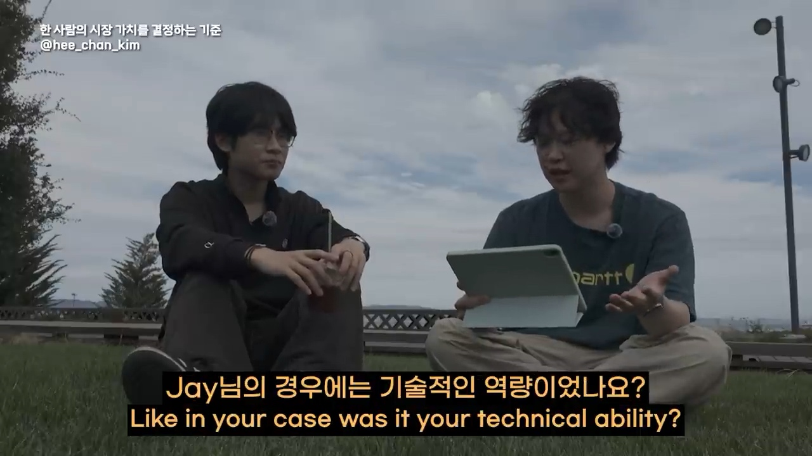
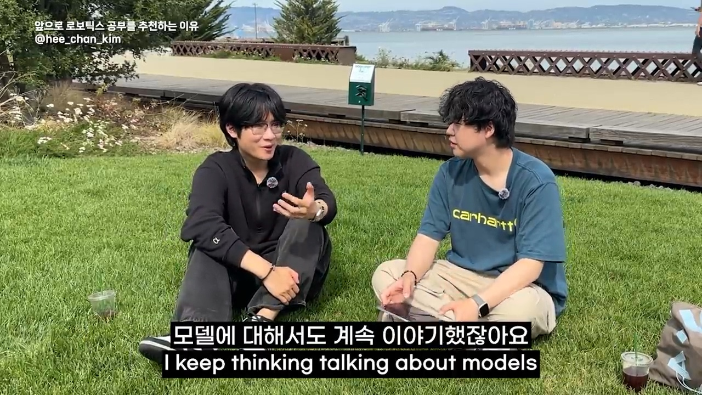
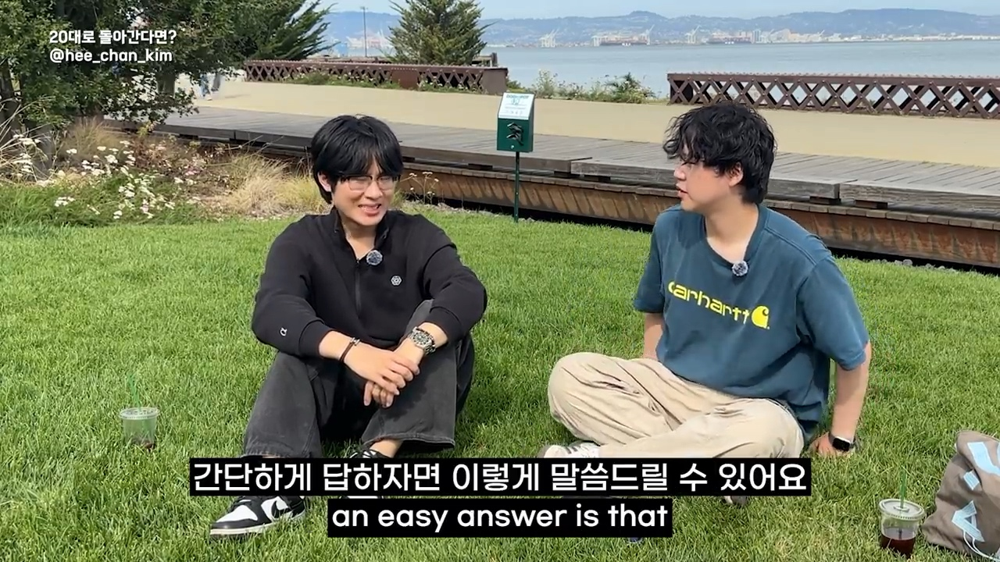
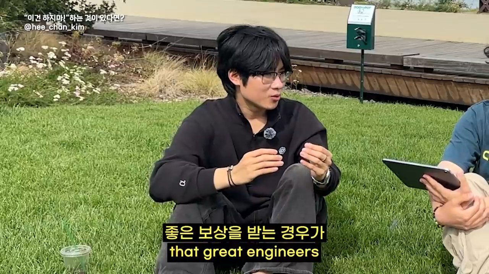
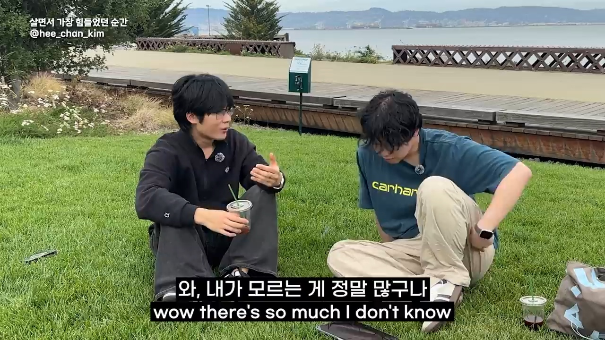

Executive summary
Curiosity matters only when it changes what you can build
Jay Jung describes a career spanning AWS EC2, computer vision at Microsoft, fundraising infrastructure at Facebook, startups, and an engineering-lead role in OpenAI's go-to-market organization. The story is not a linear recipe for joining a frontier lab. It is an argument that career value compounds when a person repeatedly learns beyond the boundary of the assigned task and uses that knowledge to create something useful.
His version of curiosity is demanding. It means following a question past the first answer, understanding how the full system works, and taking the “next derivative”: if a capability exists, what new workflow, product, or business becomes possible because of it? That behavior is useful across engineering, product, operations, and domain roles. Technical depth remains valuable, but depth without market relevance or shipped outcomes may not translate into the same external value.
- Career value is contextual. Skill is one input; demand, timing, visibility, and the ability to deliver useful outcomes determine how the market prices it.
- Curiosity is an execution habit. Strong people keep tracing dependencies, constraints, and second-order opportunities until they can act on what they learned.
- Building products compresses many lessons. External users expose gaps in problem selection, engineering, deployment, communication, and business thinking at once.
- AI raises the value of system understanding. Individual tasks may be automated, while people who can frame a problem, orchestrate tools, verify results, and own an outcome become more useful.
- The personal story needs context. Compensation figures are self-reported, and forecasts about robotics or vertical AI are informed opinions, not independently verified guarantees.
This article summarizes one person's interview and adds a critical interpretation. No employment record, compensation package, internal OpenAI system, or future-market prediction was independently audited. Read the story as a useful career model, not a promise that the same choices will produce the same job or pay.
Career path
Breadth became the connecting strategy
Jung's path crosses cloud infrastructure, computer vision, payments and fundraising systems, startups, customer relationship management, and AI. The jobs do not form one narrow specialty. Their common thread is repeated exposure to new technical layers and business contexts, followed by the attempt to understand how those layers fit together.
At OpenAI, he says his team demonstrates how the company uses its own models internally. The work sits near go-to-market teams and includes agentic and memory-oriented automation for document review, email, meetings, and knowledge recall. That position rewards an engineer who can translate between models, software, workflows, and business users. It is a concrete example of why breadth can become valuable when integration is the hard part.
Depth path
Become unusually capable in one scarce area and solve difficult problems that few people can handle.
Breadth path
Connect several technical and business domains, then reduce the coordination cost between them.
The interview does not prove that breadth is always superior. Jung explicitly treats both depth and breadth as legitimate. The practical question is which form of expertise matches the problem you want to own and whether the market can recognize the result.
Compensation
The numbers provide context, not a salary formula
Jung recalls total compensation of roughly $180,000 at Amazon, approximately $200,000–$230,000 at Microsoft in Atlanta, around $300,000 at Facebook, and packages near $500,000 at startups when equity is included. He does not disclose his OpenAI compensation. These are his retrospective estimates, not verified payroll data; equity value, location, level, vesting, year, and market conditions can change the comparison substantially.
The more durable lesson appears later: he believes he focused too heavily on compensation early in his career. His revised advice is to become a stronger engineer, create more impact, and let compensation become a consequence rather than the only selection criterion. That can be sensible as a long-horizon strategy, but it should not erase immediate realities such as debt, dependents, immigration status, health, or unequal access to risk.
Advice to deprioritize pay is easier to give after reaching very high compensation. A balanced decision protects a financial floor while still optimizing for learning, ownership, mentors, and future option value.
Market value
Skill must meet a valuable problem in a market that notices

Jung uses an Americano analogy: roughly similar coffee can carry a very different price in a grocery store and at an arena. The point is not that quality is irrelevant. It is that price is produced by a context: location, urgency, audience, scarcity, and willingness to pay. Careers have the same mechanism. Improving a skill is necessary, but moving that skill toward a problem and market that value it can change the outcome just as much.
What difficult work can you perform reliably?
How costly, urgent, or important is the problem?
Can you turn knowledge into a working outcome?
Can users, peers, or employers see and trust the impact?
This yields a stronger interpretation than “chase a hot industry.” A market can be fashionable but still be a poor fit for your strengths. Conversely, deep capability can remain underpriced if it is attached to low-priority work or is invisible outside a narrow team. Career strategy therefore involves two concurrent searches: becoming better and locating where that improvement produces meaningful leverage.
The operating trait
Curiosity means taking the next derivative
The interview's strongest idea is a distinction between passive interest and operational curiosity. Passive curiosity collects facts. Operational curiosity follows the mechanism: why does this work, what sits underneath it, what breaks, what becomes possible next, and can I turn that possibility into something another person can use?
Jung describes highly capable colleagues as people who keep moving through these layers. They do not stop at “the product works” or “the model can call a tool.” They want to understand the model, system, user, and delivery path end to end. This makes them more likely to spot constraints and opportunities before those become obvious job descriptions.
| Claim | Useful interpretation | Caution |
|---|---|---|
| Understand everything end to end | Know the critical path from user need through system output and verification. | No one can know literally everything; choose the interfaces where ignorance creates risk. |
| Automate everything | Repeated low-judgment work should trigger an automation hypothesis. | Automate only after defining correctness, failure recovery, permissions, and human ownership. |
| Keep learning outside your wall | Build enough adjacent knowledge to notice new entry points. | Breadth without practice becomes trivia; attach learning to a project or decision. |
AI at work
The change is not one tool; it is a different operating loop
Jung says he underestimated how deeply AI would enter the full workflow. It is used not only to write code, but also to outline a blueprint, review documents, prepare communication, recall prior meetings, and accelerate the path from idea to launch. In that environment, knowing one interface is less important than knowing how to decompose work and check the result.
His shorthand is aggressive: ask Codex, automate everything. The productive reading is not to delegate every decision blindly. It is to examine repeated work for a possible machine-assisted loop, then define inputs, acceptable outputs, tests, exception paths, and an accountable human. Automation that cannot be evaluated is merely faster uncertainty.
Reading the trend
Foundational context lets you recognize a capability shift
Asked how he recognized AI early, Jung returns to knowledge. If you understand the underlying technology and its limits, a new capability is easier to interpret. You can distinguish a cosmetic demo from a change that removes an old constraint. He calls this moving “left” toward foundational understanding.
He contrasts generative AI with earlier waves such as VR and the metaverse, arguing that AI's versatility gives it more entry points into daily work. That is a plausible explanation for broad adoption, but it remains his judgment. Technologies can be versatile and still encounter cost, reliability, regulation, energy, data, or organizational constraints. “Too big to fail” is confidence, not a forecast anyone can guarantee.
Instead of asking whether a technology is inevitable, ask which constraint it has removed, which workflows become newly economical, and what evidence would show that the thesis is wrong.
Future bets
Robotics and vertical AI are opportunity maps, not certainties

Jung is bullish on robotics and on vertical AI in domains such as legal, healthcare, and hardware. The common logic is that general model capability becomes more valuable when joined to a specific domain's data, constraints, tools, and workflow. This creates work not only for model researchers, but for people who understand the environment where a model must operate safely and usefully.
The risks are equally domain-specific. A legal system needs provenance and jurisdiction awareness. Healthcare needs clinical validation, privacy, and escalation. Robotics needs perception, controls, hardware reliability, and physical safety. The career opportunity is therefore not “learn AI” in isolation. It is to combine model literacy with the ability to own one consequential system around it.
Starting again
Build a product because reality grades the whole stack

A personal project can teach syntax; a product with external users forces a wider curriculum. You must identify a real pain, choose scope, build and host the system, explain it, observe behavior, repair failures, and decide whether anyone values it enough to return or pay. Each step exposes assumptions that a course or isolated coding exercise may leave hidden.
Jung observes that many exceptional engineers he has met have founder or builder experience. The reasonable inference is not that everyone should found a company. It is that ownership of a complete outcome develops judgment: what to omit, what to verify, where users struggle, and which technical quality actually matters now.
- Choose one recurring problem for a user you can reach.
- Ship the smallest end-to-end path that produces value.
- Watch real use and write down every failure or workaround.
- Deepen the technical layer that now limits reliability.
- Publish the evidence: decision, trade-off, result, and lesson.
Career correction
Optimize for compounding capability, with a financial floor

A useful way to operationalize this advice is to evaluate an opportunity on more than salary: quality of peers, access to difficult problems, ownership, feedback speed, technical depth, customer exposure, and the credibility of shipped outcomes. A role can pay well and still compound capability; the trade-off is not automatically money versus learning.
The better rule is: protect the constraints that keep your life stable, then choose the option with the strongest credible learning and ownership loop. Do not accept vague promises of “exposure” in place of fair pay, and do not assume a famous logo guarantees meaningful work.
People around the work
Growth is social infrastructure as much as personal discipline
The interview briefly widens from work to relationships. Jung credits a supportive partner and friends with making sustained learning easier. This matters because ambitious career advice can overstate individual willpower. Time to study, freedom to take a risk, emotional recovery, introductions, honest feedback, and the confidence to keep going are often produced by a network.
His daily motivation is to make “morning Jay” and “night Jay” different by at least one thing learned. The idea is powerful when interpreted gently: a small, repeatable learning delta compounds. It becomes harmful only when every day must prove productivity. Recovery and reflection are part of durable performance too.
Imposter syndrome
Turn comparison into a question you can investigate

Jung describes moving from distress to eustress: instead of “they can do this and I cannot,” he asks, “they learned it, so what can I learn from them?” That reframing converts a status comparison into an observable process. What knowledge do they have? How do they approach ambiguity? Which habits can be practiced? Where can you ask for feedback?
Reframing is useful, but it is not a universal treatment for burnout, anxiety, exclusion, or an unhealthy workplace. Sometimes the environment is the problem. A sound response combines curiosity with boundaries, rest, trusted support, and professional help when distress persists.
Synthesis
A practical career system distilled from the interview
- Build foundations. Learn enough of the underlying system to distinguish real capability changes from presentation.
- Follow curiosity through the second step. Ask what the capability enables and test the idea in a concrete workflow.
- Ship to an external user. Let reality reveal the missing technical, product, and communication skills.
- Choose context deliberately. Look for markets where the problem is important, your contribution is visible, and your learning can compound.
- Use AI with verification. Delegate repeated work, but retain tests, evidence, recovery, and human ownership.
- Build a support system. Mentors, peers, relationships, and recovery capacity are part of the career architecture.
The interview ends with a broader question: what impact do you want to have on the world? That question is useful because it reverses the normal career calculation. Instead of beginning with a prestigious employer or a compensation number, it begins with a change worth making, then asks what capabilities, collaborators, and market position would make that change possible.
Video guide
Jump to each part of the interview
- Introduction
- Jay's career path
- Big-tech compensation
- What determines market value
- Why value diverges over time
- How to increase career value
- Recognizing the AI trend
- AI versus prior technology waves
- Exceptional people at OpenAI
- What working at OpenAI changed
- Why robotics matters
- Abilities that gain value in the AI era
- Starting again in your twenties
- An early-career mistake
- Motivation to keep growing
- The hardest personal moment
- One question for the world
Sources and limitations
What this article is based on
- HeeChan: OpenAI engineer on the people whose value is rising in the AI era — full interview, chapter markers, and bilingual captions.
- Jay Jung's LinkedIn profile — profile link supplied by the video's creator; not used to independently certify every role or compensation claim.
- Jay Jung on Instagram — interviewee profile supplied in the video description.
- HeeChan Kim on Instagram — interviewer profile supplied in the video description.
The English track is auto-generated and occasionally fragments sentences; it was compared with the Korean caption track and the creator's chapter list where meaning was unclear. Screenshots are direct 1280×720 source frames. The article paraphrases rather than treating captions as a verbatim transcript. Personal compensation, internal work practices, and forecasts were not independently verified.